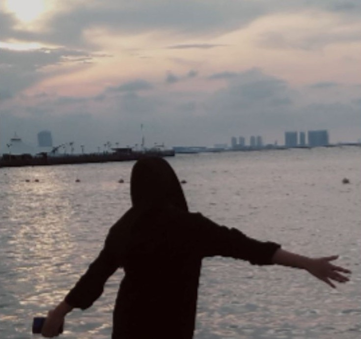

About Me
Biodata
| Nama Lengkap | : | Intan Kartika Dewi |
|---|---|---|
| Tempat Tanggal Lahir | : | Bogor, 15 Februari 2006 |
| Sekolah | : | SMKN 1 Cibinong |
| Jurusan | : | Rekayasa Perangkat Lunak |
| Lulus | : | 2024 | Fresh Graduate |
Saya adalah seorang penyihir kode yang selalu mencari cara-cara ajaib untuk mengubah ide-ide menjadi perangkat lunak nyata. Dengan kode saya, saya telah menciptakan dunia digital yang menakjubkan. Saya menuangkan ide dan mencampurkan bahasa pemrograman untuk membuat sebuah seni dengan teknologi bertemu dan menghasilkan antarmuka web yang indah dan fungsionalitas.
Saya seorang seniman yang akan menguraikan masalah dengan mencari jawaban di dalam sebuah kode. Kemampuan saya dalam mengkomunikasikan bahasa manusia ke dalam sebuah kode adalah salah satu kemampuan yang saya miliki yang memungkinkan saya dalam penciptaan project-project interaktif dan menarik.